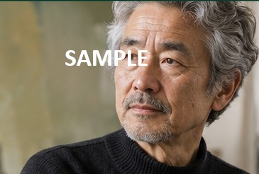
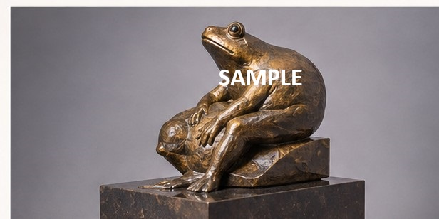

2025 / BRONZE
ARTIST ARCHIVE / SAMPLE
作家 A
Artist A
新制作展 デジタルアーカイブ

肖像写真（サンプル）PROFILE
作家プロフィール
作家 A （さっか・エー）
- 生年
- 1965年
- 出身
- 東京都
- 学歴
- 東京芸術大学 美術学部 彫刻科 卒業（架空）
- 主な素材
- ブロンズ、石、木
- 所属
- 新制作協会 会員（サンプル設定）
略歴
- 彫刻作品の制作を本格的に開始
- 新制作展 初出品（架空）
- 新制作展 新人賞受賞（架空）
- 個展「かたちと記憶」開催（架空）
- 新制作展 出品（架空）
FEATURED WORK
代表作品

2024 / BRONZE
思索する蛙
身近な生きものの姿を通して、静けさとユーモア、そして生きることの力強さを表現した作品です。
- 素材
- ブロンズ
- 寸法
- H28 × W35 × D30 cm
- 制作年
- 2024年
WORKS ARCHIVE
作品アーカイブ
2025 / BRONZE
静かな時間
2024 / BRONZE
かたちの記憶
2023 / BRONZE
夢のあと
2023 / BRONZE
風のかたち
※作品名・制作年・素材・寸法・作品解説はすべて架空のサンプルです。
EXHIBITION HISTORY
主な出展・活動履歴
- 新制作展 出品（架空）
- 新制作展 出品（架空）
- 新制作展 出品（架空）
- 個展「かたちと記憶」開催（架空）
- 新制作展 出品（架空）
作家A 専用QRコード
※現在はサンプルURLです。公開時に実際のページURLへ差し替えます。